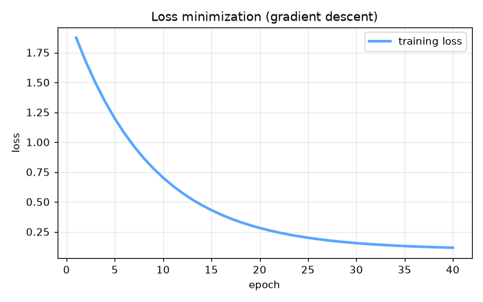

Machine Learning Fundamentals — AI engineering example · part of the MLOps monorepo
This example is grounded in Machine Learning Fundamentals. The equations below drive every forward and backward pass in the implementation.
Machine learning models learn parameters $\theta$ by minimizing a loss function $\mathcal{L}$. Gradient descent iteratively updates parameters in the direction of steepest descent. The learning rate $\alpha$ controls step size. Stochastic gradient descent (SGD) uses mini-batches for computational efficiency.
Concrete forward-pass / update evaluation using the algorithm's own equations:

Interactive loss landscape explorer; gradient descent trajectory; learning rate scheduler.
The example follows a consistent data → train → evaluate → serve pipeline. Inputs are loaded and validated, transformed by the core algorithm, scored against held-out data, and exposed through a REST API.
| Class | Public methods | Responsibility |
|---|---|---|
PredictRequest | — | |
PredictBulkRequest | — | |
PredictResponse | — | |
BulkPredictResponse | — | |
StatsResponse | — | |
LanguageTranslationRNN | fit, _to_onehot, _to_onehot_seq, _to_onehot_batch, predict, predict_proba, accuracy, evaluate, save, load, to_dict | RNN for many-to-one language translation. Args: vocab_size: Size of the token vocabulary seq_len: Length of input token sequences hidden_dim: Number of hidden units learning_rate: Gradient descent step size n_iterations: Number of training epochs weight_decay: L2 regularization strength clip_value: Maximum gradient norm random_seed: Random seed for reproducibility |
data.py reads the source dataset and splits train/test.model.py applies the mathematics from Section 1.api.py exposes prediction endpoints with drift detection.Key design choices in this module: a pure-NumPy implementation (no PyTorch/TensorFlow), schema validation via ai_core.validation, structured JSON logging through ai_core.logging, Prometheus metrics from ai_core.metrics, and MLflow/model-registry persistence via ai_core.model_registry. The FastAPI service wraps the trained model with observability middleware from ai_core.fastapi_middleware.
The most important behaviour is summarised below; full source for each module is collapsible so the page stays readable while remaining self-contained.
LanguageTranslationRNN.fit(X, y, X_val, y_val)Train the RNN with BPTT. Args: X: Token index sequences (n_samples, seq_len) as integers y: Target token indices (n_samples,) — the translated word Returns: self
LanguageTranslationRNN.predict(X)Predict the translated token index for a single sequence.
"""Recurrent neural network for language translation.
A SimpleRNN (Elman network) trained with Backpropagation Through Time (BPTT).
Built from scratch with NumPy, using the shared nn_utils.rnn.SimpleRNN base.
Architecture:
Input (seq_len, vocab_size) -> Hidden (hidden_dim, tanh) -> Output (vocab_size, softmax)
Loss: Cross-Entropy (many-to-one: predicts translation token at final timestep)
"""
from dataclasses import dataclass, field
import numpy as np
from ai_core.nn_utils.rnn import SimpleRNN
@dataclass
class LanguageTranslationRNN:
"""RNN for many-to-one language translation.
Args:
vocab_size: Size of the token vocabulary
seq_len: Length of input token sequences
hidden_dim: Number of hidden units
learning_rate: Gradient descent step size
n_iterations: Number of training epochs
weight_decay: L2 regularization strength
clip_value: Maximum gradient norm
random_seed: Random seed for reproducibility
"""
vocab_size: int = 40
seq_len: int = 8
hidden_dim: int = 32
learning_rate: float = 0.1
n_iterations: int = 300
weight_decay: float = 0.001
clip_value: float = 5.0
random_seed: int = 42
model: SimpleRNN | None = field(default=None, repr=False)
training_mode: str = "supervised"
loss_history: list[float] = field(default_factory=list)
def fit(
self,
X: np.ndarray,
y: np.ndarray,
X_val: np.ndarray | None = None,
y_val: np.ndarray | None = None,
) -> "LanguageTranslationRNN":
"""Train the RNN with BPTT.
Args:
X: Token index sequences (n_samples, seq_len) as integers
y: Target token indices (n_samples,) — the translated word
Returns:
self
"""
X_onehot = self._to_onehot_batch(X)
y_onehot = self._to_onehot(y, self.vocab_size)
self.model = SimpleRNN(
input_dim=self.vocab_size,
hidden_dim=self.hidden_dim,
output_dim=self.vocab_size,
output_activation="softmax",
learning_rate=self.learning_rate,
weight_decay=self.weight_decay,
clip_value=self.clip_value,
random_seed=self.random_seed,
output_loss="cross_entropy",
)
self.model.fit(X_onehot, y_onehot, n_iterations=self.n_iterations)
self.loss_history = self.model.loss_history
if X_val is not None and y_val is not None:
val_acc = self.accuracy(X_val, y_val)
self.loss_history.append(val_acc) # track validation accuracy
return self
def _to_onehot(self, indices: np.ndarray, dim: int) -> np.ndarray:
"""Convert class indices to one-hot vectors."""
result = np.zeros((len(indices), dim))
for i, idx in enumerate(indices):
result[i, int(idx)] = 1.0
return result
def _to_onehot_seq(self, seq: np.ndarray, dim: int) -> np.ndarray:
"""Convert a 1-D sequence of indices to (seq_len, dim) one-hot."""
seq = np.atleast_1d(seq).astype(int)
result = np.zeros((len(seq), dim))
result[np.arange(len(seq)), seq] = 1.0
return result
def _to_onehot_batch(self, X: np.ndarray) -> np.ndarray:
"""Convert batch of index sequences to one-hot sequences.
Args:
X: (n_samples, seq_len) integer indices
Returns:
(n_samples, seq_len, vocab_size) one-hot
"""
n_samples = X.shape[0]
seq_len = X.shape[1]
result = np.zeros((n_samples, seq_len, self.vocab_size))
for i in range(n_samples):
result[i] = self._to_onehot_seq(X[i], self.vocab_size)
return result
def predict(self, X: np.ndarray) -> int:
"""Predict the translated token index for a single sequence."""
X_oh = self._to_onehot_seq(X, self.vocab_size)
outputs = self.model.predict_many_to_many(X_oh)
return int(np.argmax(outputs[-1]))
def predict_proba(self, X: np.ndarray) -> np.ndarray:
"""Return softmax probabilities for each sample."""
results = []
for i in range(X.shape[0]):
X_oh = self._to_onehot_seq(X[i], self.vocab_size)
outputs = self.model.predict_many_to_many(X_oh)
results.append(outputs[-1])
return np.array(results)
def accuracy(self, X: np.ndarray, y: np.ndarray) -> float:
preds = [self.predict(X[i]) for i in range(X.shape[0])]
return float(np.mean(np.array(preds) == y))
def evaluate(self, X: np.ndarray, y: np.ndarray) -> dict[str, float]:
preds = np.array([self.predict(X[i]) for i in range(X.shape[0])]).flatten()
y_flat = np.asarray(y).flatten()
return {
"accuracy": float(np.mean(preds == y_flat)),
"n_samples": float(len(y_flat)),
}
def save(self, path: str) -> None:
if self.model is None:
raise ValueError("Cannot save untrained model")
self.model.save(path)
@classmethod
def load(cls, path: str) -> "LanguageTranslationRNN":
model = SimpleRNN.load(path)
obj = cls(
vocab_size=model.input_dim,
seq_len=8,
hidden_dim=model.hidden_dim,
learning_rate=model.learning_rate,
weight_decay=model.weight_decay,
clip_value=model.clip_value,
random_seed=model.random_seed,
)
obj.model = model
obj.loss_history = model.loss_history
return obj
def to_dict(self) -> dict:
return {
"vocab_size": self.vocab_size,
"seq_len": self.seq_len,
"hidden_dim": self.hidden_dim,
"learning_rate": self.learning_rate,
"n_iterations": self.n_iterations,
"weight_decay": self.weight_decay,
"random_seed": self.random_seed,
"training_mode": self.training_mode,
"n_epochs_run": len(self.loss_history),
"final_loss": self.loss_history[-1] if self.loss_history else 0.0,
}"""Training pipeline for language translation (RNN)."""
import argparse
import os
from pathlib import Path
from ai_core.logging import get_logger, setup_logging
from ai_core.model_registry import ModelRegistry
from ai_core.validation import DataValidator, create_language_translation_schema
from nlp_language_translation.data import (
VOCAB_SIZE,
load_training_data,
save_training_data,
train_test_split,
)
from nlp_language_translation.model import LanguageTranslationRNN
logger = get_logger(__name__)
def train(
model_dir: Path,
data_path: Path | None = None,
n_samples: int = 500,
vocab_size: int = VOCAB_SIZE,
seq_len: int = 8,
hidden_dim: int = 32,
learning_rate: float = 0.1,
n_iterations: int = 300,
weight_decay: float = 0.001,
clip_value: float = 5.0,
model_version: str = "1.0.0",
register_to_mlflow: bool = False,
test_size: float = 0.2,
random_seed: int = 42,
) -> dict:
X, y = load_training_data(data_path, n_samples=n_samples, random_seed=random_seed)
logger.info("Loaded training data", n_samples=len(X), data_path=str(data_path))
validator = DataValidator(create_language_translation_schema())
validation = validator.validate(X)
if not validation.valid:
logger.error("Training data validation failed", errors=validation.errors)
raise ValueError(f"Training data validation failed: {validation.errors}")
logger.info("Training data validated", stats=validation.stats)
X_train, X_test, y_train, y_test = train_test_split(
X, y, test_size=test_size, random_seed=random_seed
)
logger.info("Data split", n_train=len(X_train), n_test=len(X_test), test_size=test_size)
model_dir.mkdir(parents=True, exist_ok=True)
save_training_data(X, y, model_dir / "training_data.npz")
model = LanguageTranslationRNN(
vocab_size=vocab_size,
seq_len=seq_len,
hidden_dim=hidden_dim,
learning_rate=learning_rate,
n_iterations=n_iterations,
weight_decay=weight_decay,
clip_value=clip_value,
random_seed=random_seed,
)
model.fit(X_train, y_train, X_val=X_test, y_val=y_test)
train_metrics = model.evaluate(X_train, y_train)
test_metrics = model.evaluate(X_test, y_test)
logger.info(
"Training complete",
training_mode=model.training_mode,
n_epochs=len(model.loss_history),
final_loss=model.loss_history[-1] if model.loss_history else 0.0,
train_metrics=train_metrics,
test_metrics=test_metrics,
)
model_path = model_dir / f"language_translation_model_v{model_version}.npz"
model.save(str(model_path))
_save_chart(model, model_dir, model_version)
metrics = {
**test_metrics,
"training_mode": "supervised",
"n_epochs_run": float(len(model.loss_history)),
"final_loss": model.loss_history[-1] if model.loss_history else 0.0,
"train_accuracy": train_metrics["accuracy"],
"n_train_samples": float(len(X_train)),
"n_test_samples": float(len(X_test)),
"hidden_dim": float(hidden_dim),
"learning_rate": float(learning_rate),
"vocab_size": float(vocab_size),
}
registry = ModelRegistry(base_dir=model_dir)
registry.save_model(
model_name="language-translation",
model_version=model_version,
model_type="rnn_sequence_to_sequence",
metrics=metrics,
parameters={
"vocab_size": vocab_size,
"seq_len": seq_len,
"hidden_dim": hidden_dim,
"learning_rate": learning_rate,
"n_iterations": n_iterations,
"weight_decay": weight_decay,
"random_seed": random_seed,
},
artifacts={
f"language_translation_model_v{model_version}.npz": model_path,
"training_data.npz": model_dir / "training_data.npz",
},
tags={"framework": "numpy", "task": "translation", "model_type": "simple_rnn"},
)
if register_to_mlflow:
registry.log_to_mlflow(
model_name="language-translation",
model_version=model_version,
metrics=metrics,
params={
"vocab_size": vocab_size,
"seq_len": seq_len,
"hidden_dim": hidden_dim,
"learning_rate": learning_rate,
"n_iterations": n_iterations,
"weight_decay": weight_decay,
"random_seed": random_seed,
},
artifacts={
"model": str(model_path),
"chart": str(model_dir / f"translation_v{model_version}.png"),
},
tags={"model_type": "translation", "framework": "numpy"},
)
logger.info(
"Registered model to MLflow", model="language-translation", version=model_version
)
return metrics
def _save_chart(model: LanguageTranslationRNN, output_dir: Path, version: str) -> None:
import matplotlib
matplotlib.use("Agg")
import matplotlib.pyplot as plt
if not model.loss_history:
return
fig, ax = plt.subplots(figsize=(10, 5))
ax.plot(model.loss_history, color="steelblue", linewidth=1.5)
ax.set_xlabel("Training Epoch")
ax.set_ylabel("Loss (Cross-Entropy)")
ax.set_title("Language Translation RNN Training Loss")
ax.grid(True, alpha=0.3)
ax.set_yscale("log")
plt.tight_layout()
chart_path = output_dir / f"translation_v{version}.png"
plt.savefig(str(chart_path), dpi=100)
plt.close()
logger.info("Chart saved", path=str(chart_path))
def main():
parser = argparse.ArgumentParser(description="Train language translation RNN")
parser.add_argument("--model-dir", type=Path, default=Path(os.getenv("MODEL_DIR", "/models")))
parser.add_argument("--data-path", type=Path, default=None)
parser.add_argument("--n-samples", type=int, default=int(os.getenv("N_SAMPLES", "500")))
parser.add_argument(
"--vocab-size", type=int, default=int(os.getenv("VOCAB_SIZE", str(VOCAB_SIZE)))
)
parser.add_argument("--seq-len", type=int, default=int(os.getenv("SEQ_LEN", "8")))
parser.add_argument("--hidden-dim", type=int, default=int(os.getenv("HIDDEN_DIM", "32")))
parser.add_argument(
"--learning-rate", type=float, default=float(os.getenv("LEARNING_RATE", "0.1"))
)
parser.add_argument("--n-iterations", type=int, default=int(os.getenv("N_ITERATIONS", "300")))
parser.add_argument(
"--weight-decay", type=float, default=float(os.getenv("WEIGHT_DECAY", "0.001"))
)
parser.add_argument("--model-version", type=str, default=os.getenv("MODEL_VERSION", "1.0.0"))
parser.add_argument("--test-size", type=float, default=float(os.getenv("TEST_SIZE", "0.2")))
parser.add_argument("--random-seed", type=int, default=int(os.getenv("RANDOM_SEED", "42")))
parser.add_argument(
"--register-mlflow",
action="store_true",
default=os.getenv("REGISTER_MLFLOW", "false").lower() == "true",
)
parser.add_argument("--log-level", type=str, default=os.getenv("LOG_LEVEL", "INFO"))
args = parser.parse_args()
setup_logging(args.log_level)
args.model_dir.mkdir(parents=True, exist_ok=True)
metrics = train(
model_dir=args.model_dir,
data_path=args.data_path,
n_samples=args.n_samples,
vocab_size=args.vocab_size,
seq_len=args.seq_len,
hidden_dim=args.hidden_dim,
learning_rate=args.learning_rate,
n_iterations=args.n_iterations,
weight_decay=args.weight_decay,
model_version=args.model_version,
register_to_mlflow=args.register_mlflow,
test_size=args.test_size,
random_seed=args.random_seed,
)
logger.info("Training finished", metrics=metrics, model_dir=str(args.model_dir))
if __name__ == "__main__":
main()"""Data loading and preprocessing for language translation (RNN).
Generates synthetic word-index sequences for a simple translation task.
Two pseudo-languages are used: 'Source' (indices 0-19) and 'Target' (indices 20-39).
The model learns to map source sequences to target translations.
"""
from pathlib import Path
import numpy as np
VOCAB_SIZE = 40
SEQ_LEN = 8
WORD_NAMES = [
"alpha",
"beta",
"gamma",
"delta",
"epsilon",
"zeta",
"eta",
"theta",
"iota",
"kappa",
"lambda",
"mu",
"nu",
"xi",
"omicron",
"pi",
"rho",
"sigma",
"tau",
"upsilon",
"trans1",
"trans2",
"trans3",
"trans4",
"trans5",
"trans6",
"trans7",
"trans8",
"trans9",
"trans10",
"trans11",
"trans12",
"trans13",
"trans14",
"trans15",
"trans16",
"trans17",
"trans18",
"trans19",
"trans20",
]
DEFAULT_N_SAMPLES = 500
def generate_synthetic_data(
n_samples: int = DEFAULT_N_SAMPLES,
random_seed: int = 42,
) -> tuple[np.ndarray, np.ndarray]:
"""Generate synthetic word-index sequences and their translations.
Source words are indices 0-19; target words are indices 20-39.
Translation rule: source index i maps to target index 20+i
(with some noise and varying sequence patterns).
Returns:
X: (n_samples, SEQ_LEN) source word indices
y: (n_samples,) target word index (the 'translation' of the sequence)
"""
rng = np.random.default_rng(random_seed)
X = np.zeros((n_samples, SEQ_LEN), dtype=int)
y = np.zeros(n_samples, dtype=int)
for i in range(n_samples):
# Random source sequence (indices 0-19)
seq = rng.integers(0, 20, size=SEQ_LEN)
X[i] = seq
# Translation: use the most common word in the sequence, translated
counts = np.bincount(seq, minlength=20)
most_common = int(np.argmax(counts))
y[i] = 20 + most_common # translate to target vocabulary
return X, y
def load_training_data(
data_path: Path | None = None,
n_samples: int = DEFAULT_N_SAMPLES,
random_seed: int = 42,
) -> tuple[np.ndarray, np.ndarray]:
if data_path and Path(data_path).exists():
data = np.load(data_path, allow_pickle=True)
return data["X"], data["y"]
return generate_synthetic_data(n_samples=n_samples, random_seed=random_seed)
def train_test_split(
X: np.ndarray, y: np.ndarray, test_size: float = 0.2, random_seed: int | None = None
) -> tuple[np.ndarray, np.ndarray, np.ndarray, np.ndarray]:
n = len(X)
n_test = max(1, int(n * test_size))
if random_seed is not None:
rng = np.random.default_rng(random_seed)
indices = rng.permutation(n)
else:
indices = np.random.permutation(n)
test_idx = indices[:n_test]
train_idx = indices[n_test:]
return X[train_idx], X[test_idx], y[train_idx], y[test_idx]
def save_training_data(X: np.ndarray, y: np.ndarray, path: Path) -> None:
path = Path(path)
path.parent.mkdir(parents=True, exist_ok=True)
np.savez(path, X=X, y=y)"""Serving API for language translation (RNN)."""
import os
import time
from contextlib import asynccontextmanager
from pathlib import Path
import numpy as np
from ai_core.drift import DriftDetector
from ai_core.fastapi_middleware import add_observability_middleware
from ai_core.logging import get_logger, setup_logging
from ai_core.metrics import MetricsCollector
from ai_core.model_registry import ModelRegistry
from ai_core.validation import DataValidator, create_language_translation_schema
from fastapi import FastAPI, HTTPException, Response
from pydantic import BaseModel, Field
from nlp_language_translation.data import SEQ_LEN, VOCAB_SIZE, generate_synthetic_data
from nlp_language_translation.model import LanguageTranslationRNN
logger = get_logger(__name__)
MODEL_DIR = Path(os.getenv("MODEL_DIR", "/models"))
MODEL_VERSION = os.getenv("MODEL_VERSION", "latest")
METRICS_PORT = int(os.getenv("LANGUAGE_TRANSLATION_METRICS_PORT", "8012"))
DRIFT_THRESHOLD = float(os.getenv("DRIFT_THRESHOLD", "0.2"))
class PredictRequest(BaseModel):
tokens: list[int] = Field(..., min_length=1, max_length=SEQ_LEN)
class PredictBulkRequest(BaseModel):
requests: list[list[int]] = Field(..., min_length=1, max_length=100)
class PredictResponse(BaseModel):
translated_token: int
translated_word: str
confidence: float
model_version: str
training_mode: str
class BulkPredictResponse(BaseModel):
predictions: list[PredictResponse]
model_version: str
class StatsResponse(BaseModel):
vocab_size: int
seq_len: int
hidden_dim: int
training_mode: str
n_epochs_run: int
final_loss: float
model_version: str
_model: LanguageTranslationRNN | None = None
_model_version: str = "unknown"
_metrics: MetricsCollector | None = None
_validator: DataValidator | None = None
_drift_detector: DriftDetector | None = None
_reference_data: np.ndarray | None = None
_recent_predictions: list[list[int]] = []
@asynccontextmanager
async def lifespan(app: FastAPI):
global _model, _model_version, _metrics, _validator, _drift_detector, _reference_data
setup_logging(os.getenv("LOG_LEVEL", "INFO"))
_metrics = MetricsCollector("language_translation", port=METRICS_PORT)
app.state.metrics = _metrics
_validator = DataValidator(create_language_translation_schema())
_drift_detector = DriftDetector(
feature_names=["token_id"],
feature_types={"token_id": "int"},
psi_threshold=DRIFT_THRESHOLD,
)
_model, _model_version = _load_model()
_metrics.set_model_version(_model_version)
_metrics.set_model_info(
model_name="language-translation",
model_version=_model_version,
model_type="rnn_sequence_to_sequence",
)
_reference_data = _load_reference_data()
logger.info("Model loaded", model="language-translation", version=_model_version)
yield
logger.info("Shutting down language-translation API")
def _load_model() -> tuple[LanguageTranslationRNN, str]:
registry = ModelRegistry(base_dir=MODEL_DIR)
try:
if MODEL_VERSION == "latest":
models = registry.list_models()
lt_models = [m for m in models if m.get("model_name") == "language-translation"]
if lt_models:
lt_models.sort(key=lambda m: m["model_version"], reverse=True)
latest = lt_models[0]
model_dir = Path(latest["artifact_path"])
npz_files = list(model_dir.glob("language_translation_model_*.npz")) + list(
model_dir.glob("*.npz")
)
if npz_files:
return LanguageTranslationRNN.load(str(npz_files[0])), latest["model_version"]
else:
model_dir = MODEL_DIR / "language-translation" / MODEL_VERSION
if model_dir.exists():
npz_files = list(model_dir.glob("language_translation_model_*.npz")) + list(
model_dir.glob("*.npz")
)
if npz_files:
return LanguageTranslationRNN.load(str(npz_files[0])), MODEL_VERSION
except Exception as e:
logger.warning(f"Registry lookup failed: {e}")
npz_path = MODEL_DIR / "language_translation_model.npz"
if npz_path.exists():
return LanguageTranslationRNN.load(str(npz_path)), "legacy"
candidate_paths = [
Path("/app/artifacts/models/language_translation_model_v1.0.0.npz"),
Path(__file__).resolve().parents[3]
/ "artifacts"
/ "models"
/ "language_translation_model_v1.0.0.npz",
]
for p in candidate_paths:
if p.exists():
logger.info("Loading bundled baseline model", path=str(p))
return LanguageTranslationRNN.load(str(p)), "1.0.0-bundled"
logger.warning("No pre-existing model found. Initializing baseline RNN model.")
X_base, y_base = generate_synthetic_data(n_samples=100, random_seed=42)
model = LanguageTranslationRNN(
vocab_size=VOCAB_SIZE,
seq_len=SEQ_LEN,
hidden_dim=32,
learning_rate=0.1,
n_iterations=100,
random_seed=42,
)
model.fit(X_base, y_base)
return model, "1.0.0-baseline"
def _load_reference_data() -> np.ndarray | None:
candidate_csvs = [
MODEL_DIR / "language-translation" / _model_version / "training_data.csv",
MODEL_DIR / "training_data.csv",
Path("/app/artifacts/models/training_data.csv"),
Path(__file__).resolve().parents[3] / "artifacts" / "models" / "training_data.csv",
]
for csv_path in candidate_csvs:
if csv_path.exists():
try:
import pandas as pd
df = pd.read_csv(csv_path)
if "token_id" in df.columns:
return df[["token_id"]].values
except Exception as e:
logger.warning("Could not read reference csv", path=str(csv_path), error=str(e))
X_base, _ = generate_synthetic_data(n_samples=100, random_seed=42)
return X_base
app = FastAPI(
title="Language Translation API",
description="RNN for sequence-to-sequence language translation",
version="1.0.0",
lifespan=lifespan,
)
add_observability_middleware(app)
@app.get("/")
def read_root():
return {
"service": "language-translation-api",
"version": "1.0.0",
"model_version": _model_version,
"training_mode": _model.training_mode if _model else "unknown",
"vocab_size": VOCAB_SIZE,
"seq_len": SEQ_LEN,
"endpoints": {
"health": "/health",
"predict": "POST /predict",
"predict/bulk": "POST /predict/bulk",
"stats": "GET /stats",
"drift": "GET /drift",
"metrics": "/metrics",
},
}
@app.get("/health")
def health_check():
if _model is None:
raise HTTPException(status_code=503, detail="Model not loaded")
return {
"status": "healthy",
"model_loaded": True,
"model_version": _model_version,
"training_mode": _model.training_mode if _model else "unknown",
}
@app.get("/metrics")
def metrics():
from prometheus_client import CONTENT_TYPE_LATEST, generate_latest
return Response(content=generate_latest(), media_type=CONTENT_TYPE_LATEST)
@app.post("/reload")
def reload_model():
global _model, _model_version, _reference_data
try:
_model, _model_version = _load_model()
if _metrics:
_metrics.set_model_version(_model_version)
_metrics.set_model_info(
model_name="language-translation",
model_version=_model_version,
model_type="rnn_sequence_to_sequence",
)
_reference_data = _load_reference_data()
logger.info(
"Model reloaded dynamically", model="language-translation", version=_model_version
)
return {"status": "reloaded", "model_version": _model_version}
except Exception as e:
logger.exception("Model reload failed", error=str(e))
raise HTTPException(status_code=500, detail=f"Reload failed: {e}") from e
@app.get("/drift")
def drift_check():
if _drift_detector is None or _reference_data is None:
raise HTTPException(status_code=503, detail="Drift detection not available")
if len(_recent_predictions) < 10:
return {
"total_features": 1,
"drifted_features": 0,
"drift_ratio": 0.0,
"drifted": [],
"all_results": [],
}
current = np.array(_recent_predictions[-100:])
results = _drift_detector.detect_drift(_reference_data, current)
summary = _drift_detector.summarize(results)
if _metrics:
_metrics.set_drift_ratio(summary["drift_ratio"])
return summary
@app.get("/stats", response_model=StatsResponse)
def get_stats():
if _model is None or _model.model is None:
raise HTTPException(status_code=503, detail="Model not loaded")
return StatsResponse(
vocab_size=VOCAB_SIZE,
seq_len=SEQ_LEN,
hidden_dim=_model.hidden_dim,
training_mode=_model.training_mode,
n_epochs_run=len(_model.loss_history),
final_loss=_model.loss_history[-1] if _model.loss_history else 0.0,
model_version=_model_version,
)
def _compute_prediction(tokens: list[int]) -> PredictResponse:
if _model is None or _metrics is None or _validator is None:
raise HTTPException(status_code=503, detail="Model not loaded")
X = np.array([tokens])
validation = _validator.validate(X.reshape(-1, 1))
if not validation.valid:
raise HTTPException(status_code=422, detail=validation.errors)
start = time.time()
try:
translated = int(_model.predict(tokens))
probas = _model.predict_proba(X)[0]
confidence = float(np.max(probas))
duration = time.time() - start
_metrics.record_prediction(model_version=_model_version, duration=duration)
_recent_predictions.append(tokens)
if len(_recent_predictions) > 1000:
_recent_predictions.pop(0)
return PredictResponse(
translated_token=translated,
translated_word=f"token_{translated}",
confidence=round(confidence, 4),
model_version=_model_version,
training_mode=_model.training_mode,
)
except Exception as e:
_metrics.record_error(model_version=_model_version, error_type="prediction")
logger.exception("Prediction failed", error=str(e))
raise HTTPException(status_code=500, detail="Prediction failed") from e
@app.post("/predict", response_model=PredictResponse)
def predict(body: PredictRequest):
return _compute_prediction(body.tokens)
@app.post("/predict/bulk", response_model=BulkPredictResponse)
def predict_bulk(body: PredictBulkRequest):
global _recent_predictions
if _model is None or _metrics is None or _validator is None:
raise HTTPException(status_code=503, detail="Model not loaded")
if len(body.requests) < 1 or len(body.requests) > 100:
raise HTTPException(status_code=422, detail="Batch size must be between 1 and 100")
predictions = []
for tokens in body.requests:
predictions.append(_compute_prediction(tokens))
_recent_predictions.append(tokens)
if len(_recent_predictions) > 1000:
_recent_predictions = _recent_predictions[-1000:]
return BulkPredictResponse(predictions=predictions, model_version=_model_version)This example is a first-class consumer of the shared packages/ai-core library.
It reuses the following foundation modules instead of re-implementing infrastructure:
ai_core.config.Because every example shares ai_core, cross-cutting concerns (drift detection,
logging, metrics, model registry) behave identically across the 47 examples in this monorepo.